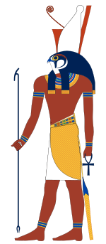
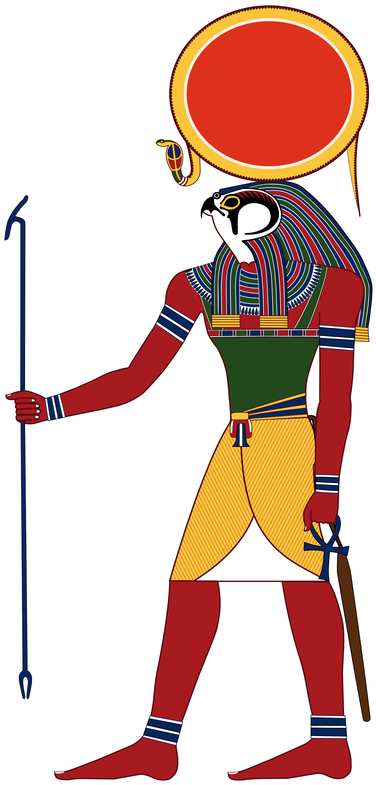
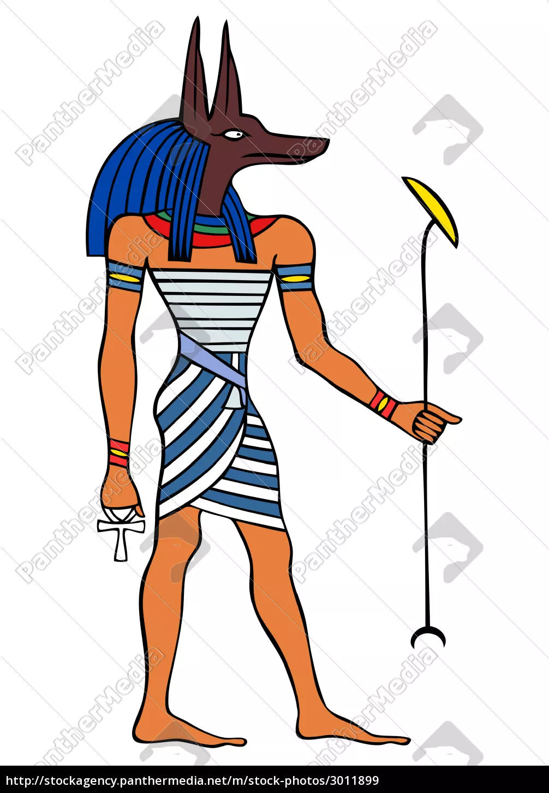
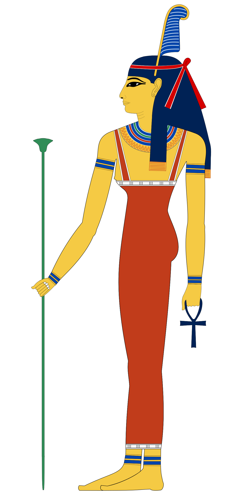
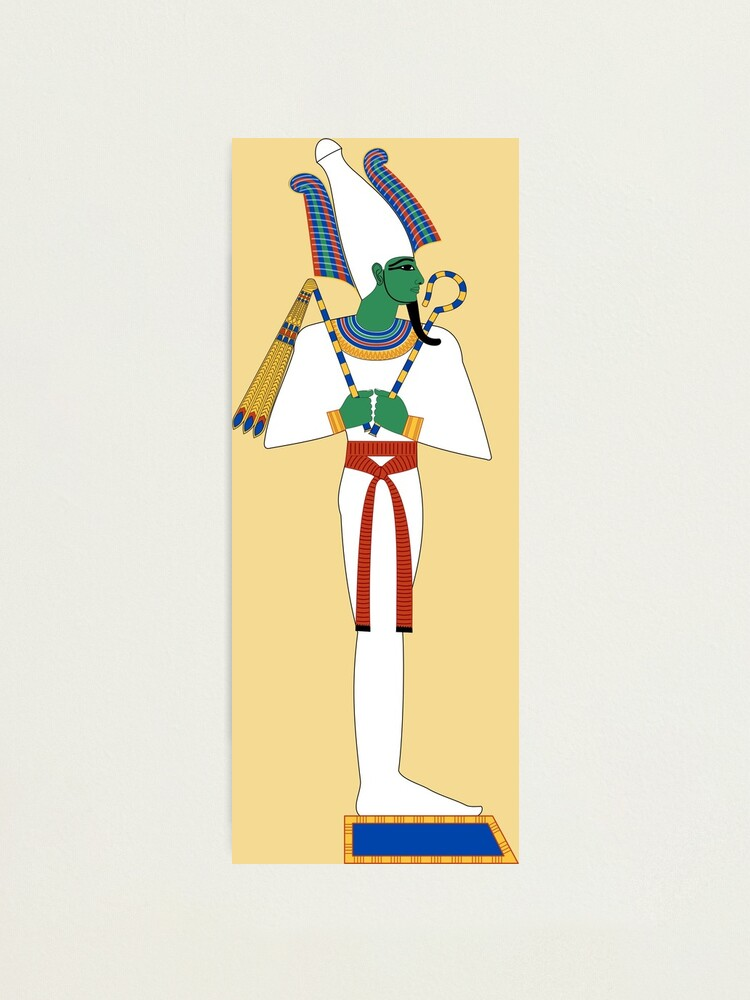
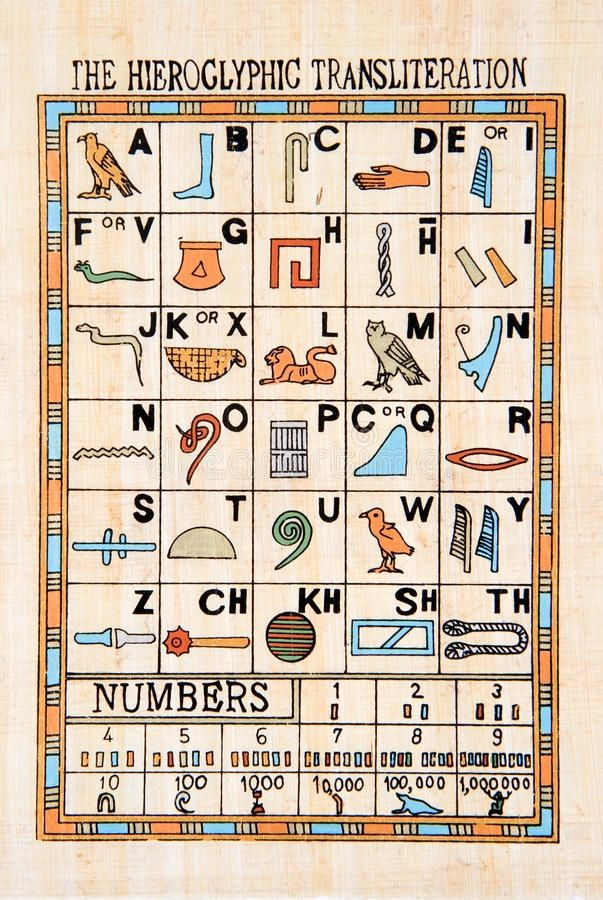

Hochkulturen entstehen
In einigen Teilen Nordafrikas und Asiens entwickelten sich die Kultur rascher als in den anderen Gebieten der Welt.

Die großen Strömen Nil, Euphrat, Tigris, Indus, Ganges und Hoangho hatten immer viel Wasser.
Zu bestimmten Zeit gab es Hochwasser. Dieses Hochwasser überschwemmte das umliegende Land.
Die an diesen großen Flüsse entstanden Kulturen nennt man Hochkulturen.
Bewässerunganlage
Um besser leben zu können, zogen die Menschen in das Land an
diesen großen Flüssen. Die Menschen bauten Bewässerungsanlagen
damit die Felder nicht austrocken

Die Menschen in Ägypten
Den Aufbau der ägyptischen Gesellschaft kann man sich wie eine Pyramide vorstellen:

Es gab folgende Personen in Ägypten:
- Pharao
- Priester
- Wesir
- Beamte
- Schreiber
- Bauern
- Handwerker
- Händerl
- Sklaven
Berufe
An der spitze des Reiches stander der Pharao. Er war die wichtigste Person
im Land. Der Pharao galt als Sohn des Sonnengottes und wurde von den
Menschen wie ein Gott verehrt. Das ganze Land und alles, was darauf
wuchs, gehörten ihm.
Neben dem Pharao gabes die Priester. Diese hatten großen Einfluss,weil
sie für den Pharao den Willen der Götter deuteten. Jeder Tempel mit dem
umliegenden Land hatten einen eigenen Priester.
Der Wesir war ein mächtiger Beamter, der dem Pharao beim Regieren
des Landes half. Die Beamten beaufsichtigte die Eintreibung der
Steuern und den Bau von Kanälen und Pyramiden. Sie mussten
schreiben, lesen und rechnen können.
Die Schreiber führten buch über die Materialien, die für Bauwerke
verwendet wurden. Sie kontrollierten die Eintreibung von Steuern.
Wesire, Beamte und Schreiber wurden vom Pharao für ihre Arbeit gut
bezahlt.
Geschickte Handwerker und Handwerkerinnen waren sehr gefragt. Zu
den Handwerken gehörten Goldschmiede, Bierbauern, Tischler, Töpfer,
Schuster, Glasbläser und Weber. Sie verkauften ihre Waren in der Stadt
und konnten davon gut leben.
Die ägyptischen Händler
und Händlerinnen verwendeten kein Geld. Sie tauschten ihre Waren mit
anderen Händlern.
Die Bauern und Bäuerinnen bauten Kanälen, halfen
bein Bau der Pyramiden, pflügten, säten und ernteten. Einen Teil ihrer
Ernte mussten sie alljährlich als Steuern abliefern.
Sklaven und Sklavinnen waren häufig Kriegsgefangene und mussten
für ihre Herren arbeiten. Sie waren nicht frei und konnten auch verkauft
werden.
Religion in Ägypten
In Ägypten glaubt man an viele Götter und Göttinnen
Die Menschen im Alten Ägypten glaubten an mehr als 1 000
verschiedeneGötter und Götterinnen. Für jeden Anlass im Leben gab es
die dafür ,,zuständig'' Götter.
Die Götter und die Menschen lebten in verschiedenen Welten.
Verbindung zu den Göttern konnten nur der Pharao aufnehmen, weil er
als Sohn des Sonnengottes galt

Horus
Himmelsgott:Er
war der erste
Pharao und
Herrscher
Ägyptens.

Re
Sonnengott:Er
als Schöpfer und
Herrscher des
Universums und des
Lebens.

Anibus
Totengott:Er
führte die Toten
ins Jenseits

Isis
Göttin der
Familie und der
Kinder:
Sie heilte auch
Krankheiten.

Osiris
Gott des Jenseits,
der Wiedergeburt
und der Toten:Er
war der Richter über
die Toten.
Hieroglyphen
Die Hieroglyphen war eine Bilderschrift.Jedes Schriftzeichen stand
für ein Wort oder einen Laut. Insgesamt gab es etwa 700 verschiedene
Zeichen. Diese schrieben Schreibern auf Papyrus oder meißelten sie in
Stein ein.

Ende Danke für das Lesen